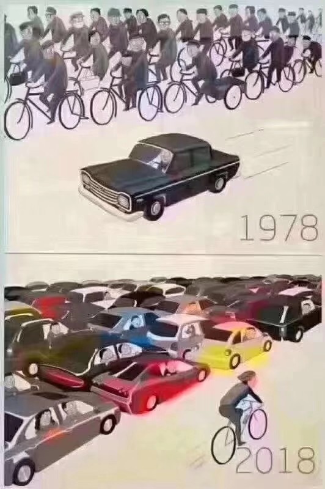

2018 总结
知乎-Twitter-微博整理
知乎
父母如何教自己的孩子学英语？
有哪些经典的婴儿玩具？
80部儿童英语动画推荐分享
如何看待「5 岁小朋友简历逆天」引发热议，儿童学前教育开始时间越早越好吗？
你忍不住想看第二遍的一个视频是什么？宝宝准备早餐
计算机科学与技术专业的学生要怎样做才能避免成为一个低级的码农？
上海户口+年薪120万人民币 VS 美国绿卡+旧金山年薪20万美元，如何选择？
怎么在一个月内让英语听力有明显的提高？
有哪些神经科学上的事实，没有一定神经科学知识的人不会相信？移魂换体
有什么信息量很大的短视频？雇佣人生
黎曼猜想
你手机中最舍不得删的一段视频是什么？真实的美国
程序员如何应对诸如「给我弄个网站吧」的请求？
我的偶像David Duffield的创业故事
怎么做好互联网公司的技术团队负责人？
一枚硬币，扔了一亿次都是正面朝上，再扔一次反面朝上的概率是多少？
你手机中最舍不得删的一段视频是什么？ 心脏骤停（人工呼吸，心脏按压）；中暑（降温）；气道梗阻（海姆立克法；腹部冲击法）；烫伤（立刻降温）；癫痫（肌肉锁紧，不要干预）
用烤箱可以做什么好吃简单便宜的美食？
知乎：数据库
SQL 查询优化原理与 Volcano Optimizer 介绍
PolarDB：B+树并发控制
内部一致性，外部一致性
F1 Query
PolarFS
数据库系统领域（oltp，olap都包括）有哪些顶级的实验室呢？
《A Critique of ANSI SQL Isolation Levels》论文实验
十问 TiDB ：关于架构设计的一些思考
请问分布式事务一致性与raft或paxos协议解决的一致性问题是同一回事吗？
测试分布式系统的线性一致性
Amazon Aurora 深度探索
读后感，Spanner: Becoming a SQL System (Sigmod 2017)
分布式系统论文笔记目录
Zab，Raft，Viewstamp的区别（1）选举
比较raft ，basic paxos以及multi-paxos
TiDB 源码阅读系列文章
Google Spanner 事务在存储层的实现
分布式系统中的一致性
NewSQL系统综述——NewSQL到底New在哪里？
详解CockroachDB事务处理系统
PebblesDB读后感
如何评价 2017 年 Jeff Dean 的关于使用 deep learning 做索引的论文？
MongoDB 存储引擎 WiredTiger 原理解析
求推荐 Lock-Free 算法相关论文？
TiDB@腾讯云使用及性能测试
Paxos、Raft分布式一致性算法应用场景
TerarkDB - 我们发布了一款划时代的存储引擎
Redis服务支持5000万的QPS，有什么好的思路？
如何浅显易懂地解说 Paxos 的算法？
两阶段提交的工程实践
OceanBase的一致性协议为什么选择 paxos而不是raft?
《DDIA》读书笔记
Amazon Aurora 读后感
如何评价小米开源数据库 pegasus？
大学生如何实现一个数据库？
云时代数据库的核心特点
云数据库设计-功能矩阵
aws aurora论文观后
比较raft ，basic paxos以及multi-paxos
知乎：计算机
机器学习理论篇1：机器学习的数学基础
评:Streaming System(简直炸裂,强势安利)
cas做了锁了总线或缓存行还是volatile做了锁总线或缓存行?
简评:设计分布式系统(分布式系统的设计模式)
为什么有些大公司技术弱爆了？
(简评)建造可进化的系统构架
最近比较火的parameter server是什么？
你遇到过哪些高质量的 Go 语言面试题？
多处理器编程：从缓存一致性到内存模型
如何评价吴恩达开设的 Deep Learning Specialization 课程？
作为程序员，你关注哪些国外 IT 网站？
为什么有很多人说 Go 语言不需要依赖注入？
Linux性能分析工具与图形化方法
这 10 款良心 Windows 软件，改变你对国产的认知
百度学术能否替代 Google 学术网站？有没有其他选择？
分布式系统范式是什么？如何系统学习分布式计算？
Coursera 上有哪些课程值得推荐？
对数据库和分布式很感兴趣，学习路线是什么？
大数据全攻略：10年老兵带你看尽MaxCompute大数据运算挑战与实践
数据库有没有类似现代操作系统的好书？
学习分布式系统需要怎样的知识？
为什么说HADOOP扩展性优于MPP架构的关系型数据库？
机器学习；机器对机器学习
Google 涂鸦
Goland
Deeper Program Analysis with go/parser
Our Bw-Tree paper was accepted to #SIGMOD18 last night.
Golang: Hello-China
Contention-Aware Lock Scheduling for Transactional Databases. This is a great paper from @BarzanMozafari. It's the new default lock scheduling algorithm for @MySQL v8
Go 1.10 is released!
“For the third year in a row, Rust is the most loved programming language among our respondents”
Today @CSDatCMU DB speaker: Alok Pareek (@striimteam) talking about distributed stream processing
Great to see a USE method dashboard by @circonus at #SREcon -- solves lots for perf issues
I just deployed a high performance cloud server on http://Vultr.com ! #ILoveVultr #Cloud
CockroachDB 2.0 is here! With JSON, geo-partitioning, & huge performance improvements, v2.0 enables a company’s data layer to evolve with the business -- whether you are in a single datacenter or expanding across an ocean. Read all about it: https://cockroa.ch/2dot0
马丁·福勒大师今天宣布，经典名著《重构（Refactoring）》的第二版已经写完了，今年秋天上市。
If operations is your thing... this talk by @brendangregg is a must watch. Checklists are one of those no brainer ideas that everyone agrees on... but few do well! Talks We Like: Performance Checklists for SREs by Brendan Gregg
A Bash Script to Create a Bootable USB from ISO in Linux
Today's @CSDatCMU DB speaker: Jiaqi Yan from @ SnowflakeDB talking about automatic partitioning + clustering in cloud databases (12pm in CIC 4th Floor)
波士顿动力 公司今天刚刚放出来，它们的机器人在真实环境又跑又跳。
过去一两年，陆陆续续写了些观点，可以简单分成两组，第一组是毒汤，用来扎心，第二组是鸡汤，用来激励。你喜欢哪一碗？
CockroachDB dev @justinjaffray goes digging to understand exactly when and why anomalies like write-skew can happen
一些分辨率术语的含义:
- 720p: 1280 x 720, 称为 HD
- 1080p: 1920 x 1080, 称为 FULL HD
- 1440p: 2560 x 1440, 称为 QHD 或 Quad HD，即4倍的HD
- 2160p: 3840 x 2160, 称为 4K
- 4320p: 7680 x 4320, 称为 8K
《伦敦心跳》是一个很有意思的**数据可视化作品**。伦敦地铁的客流量用粗细表示，人流越多，线就越粗。
1 years seconds = \pi \cdot 10^7
How to be a manager.
“#CRDTs and the Quest for Distributed Consistency”
I am incredibly excited to see this paper from #SIGMOD18 on implementing Flexible Paxos for geo-distributed consensus. It's brilliant to see the theory from my PhD being put into practice by others.
Jepsen now offers an explorable version of @pbailis et al's map of consistency models, with detailed explanations and links to relevant papers: https://jepsen.io/consistency
如何识别假新闻：1、将新闻配图下载；2、使用谷歌图片搜索的“按图片搜索”功能，搜索该新闻配图；3、找到类似图片，查看原始新闻。
Thanks to Lu Pan for translating my blog post “Please stop calling databases CP or AP” into Chinese: “请不要再称数据库是CP或者AP”
波士顿动力公司在成立16年后，终于要发售第一款产品了：一个类似小狗的四足机器人，高91厘米，重25公斤。
Microsoft's PowerShell is open source and available for #Linux. Will you ever use it on Linux?.
“Architecture of a Database System” by @joe_hellerstein et al. is a solid introduction: http://db.cs.berkeley.edu/papers/fntdb07-architecture.pdf …
And for further reading, “Readings in Database Systems” by @pbailis et al. is a good curated, annotated set of papers: http://www.redbook.io/
Google's new F1 #VLDB18 paper uses a single special email address just for that paper. This is a good idea when there are a lot of authors. It's sort of obvious but I've just never seen it before. http://www.vldb.org/pvldb/vol11/p1835-samwel.pdf … /cc @divyagrawal @spoonboy42
微软的海底机房项目，带有两个外部摄像头，现在全天直播海底世界，看上去鱼儿很喜欢这个东西（也许与它会散热有关）
@prashanth_menon's #LLVM ROF paper is runner-up for #VLDB18 Best Paper: https://db.cs.cmu.edu/papers/2017/p1-menon.pdf … This means a lot to us. A former friend was unethical and personally got this paper rejected from SIGMOD because we only cited their paper once instead of twice. We were really upset
在极客时间总结我面试经验的过程时，写了一些“鸡汤”和“毒药”，极客时间编辑看过后觉得应该全都放出来。那就放出来吧，就像上次一样，鸡汤和毒药配着喝，别有一番风味
新的博客文章《Vim 配置入门》：Vim 的配置不太容易，它有自己的语法，许许多多的命令。我总是记不清楚，所以就整理了下面这篇文章，列出主要配置项的含义。
Such an amazing slide deck by @deniseyu21 on why distributed systems are so hard https://drive.google.com/file/d/15nxAaVXZwNFnJNVvgtKonNbzxNgTUCxP/view …
想要搭建家用储存系统的朋友，可以看下面这篇教程《树莓派如何搭建 NAS》，操作简单，可玩性高，费用便宜。
CMUDB Intro to Database Systems 2018
Estimated number of clock cycles it takes to do various things on a modern CPU, e.g. atomic CAS or context switch: http://ithare.com/infographics-operation-costs-in-cpu-clock-cycles/ … — useful for a concurrent systems course I'm currently teaching
I am now aware of 4 major silicon valley companies building an internal distributed OLTP DBMS. Each story is almost the same: 1. They want a version of Spanner w/o TrueTime. 2. They evaluated @CockroachDB + TiDB + @Comdb2 + @YugaByte + @FoundationDB but decided to build their own
Two of then asked for my feedback on their system design. Here is the scariest quote (paraphrasing) I've seen so far from one of them: "We are not database experts… And the system architecture is still evolving" 随后, 两人询问了我对他们系统设计的反馈。下面是我迄今所看到的最可怕的一句话 (释义): "我们不是数据库专家.....。而系统架构仍在不断发展 "
Transactions are hard. Distributed transactions are harder. Distributed transactions over the WAN are final boss hardness. I'm all for new DBMSs but people should tread carefully. See @daniel_abadi's blog article: http://dbmsmusings.blogspot.com/2018/09/newsql-database-systems-are-failing-to.html … NewSQL database systems are failing to guarantee consistency, and I blame Spanner
Amazon's Oracle data warehouse was one of the largest (if not THE largest) in the world. RIP. We have moved on to newer, faster, more reliable, more agile, more versatile technology at more lower cost and higher scale. #AWS Redshift FTW!
DDIA dataintensive.net/ is a great book about databases
The Chinese (simplified) translation of Designing Data-Intensive Applications, 数据密集型应用系统设计, is now available! https://item.jd.com/12437624.html
Redox – A Unix-Like Operating System Written in Rust https://www.redox-os.org/
免费、免安装、浏览器里在线直接用的Photoshop替代者：Photopea。能完成的大部分PS功能，跨平台跨设备，甚至在手机浏览器里都可以用。 http://t.cn/RaXzFO3
所以，天朝彩票不是随机的，反而可以预测而提高中奖率？
都有一个过程，理解编程语言的逻辑和可以用来解决那些已知问题是一个宽容度很高的阶段，如果没能从这个阶段解脱出来，很多程序员可能只能一直「专注」而无法「着迷」。
前两天在飞机上刚看了《千钧一发》（豆瓣评分：8.7），今天就看到抗艾滋病的基因编辑的新闻。那就顺手推荐一下1997年的这部电影！(腾讯 VIP 可以看)
人只要扎堆儿，集体智商就会退化到最低的那个人的水平，甚至更低。"曾经以为，乌合之众指的是一帮水平低下的聚集。后来才意识到，只要一帮子聚在一起且停留在舒适区只求同不存异，就是乌合之众，无关个体水平高低。"
《指环王》导演彼得·杰克逊，将第一次世界大战原始的黑色胶片，进行锐化和着色，拍成了一部新的纪录片，本月公映。
下面的镜头都是真实的，拍摄在100年前，历史好像活了一样，太奇妙了。https://kottke.org/18/11/they-shall-not-grow-old …
新四大发明之一…… 共享单车
mathsisfun.com/ 有趣的数学，必须安利这个网站，虽然做的不“漂亮”，但内容是真的扎实，而且涵盖了幼儿园到高中（我觉得可以到大学）的数据知识，包括代数，几何，统计，微积分，简单群论，和额外的基本物理科普支持。关键的是，还有一群志愿者搞了中文版。
張首晟教授: 從沙粒看世界 https://youtu.be/kLs4bf9g1aw YouTube 上有个张首晟教授的讲座。看完的话，对张教授，还是能加深不少了解。
翻墙使用谷歌街景地图可网上游览大英博物馆，谷歌拍的相片里，大英博物馆里一个人也没有，游览起来真是爽。https://artsandculture.google.com/streetview/british-museum/AwEp68JO4NECkQ …
加拿大今晚允许孟晚舟保释（引渡事宜是数月后的事了），给刘鹤创造本周赴美的时间窗口——这对中美加各方都好。
社会主义程序员核心价值观：1）坚定地坚持996乃至无限时的工作制，2）坚决地拥护产品经理的一切决定，3）高举大杂烩功能且不断试错的伟大旗帜，4）深入贯彻落实KPl和人肉运维科学发展观，5）勇于用自己的技术主动承担公司公众问题的无限责任，6）积极推动给后人不断挖大坑的最佳实践……（大家继续）
I never tire of looking at videos of Chinese click farms. It's just so surreal to see hundreds of phones playing the same video for the purposes of fake engagment. 我从不厌倦看**中国点击农场**的视频。看到上百部手机为了假的娱乐目的播放同样的视频, 实在是太超现实了。
Crown lawyer: the 60 days that the US government has to file a formal extradition request ends on Jan 8 2019. If USA does not file that at the time, she must be released, says judge. #huawei #MengWanzhou 美国政府必须提交正式引渡请求的60天时间将于2019年1月8日结束。
SkySaver是一款专为高楼层用户研发的**速降逃生背包**。背包内置降速控制系统，可自动将速度控制在1-2m/s范围内,避免下降速度太快引起不适。使用时，只需迅速背上背包，系紧安全带，将绳索扣在窗户上方提前固定好的锚上，直接从窗户落下即可。绳索最大长度可供26楼层用户使用，最高承重135公斤
向松祚震撼演讲：四十年未有之大变局 http://t.cn/EUrKi4g。
Evolution of Software Architecture
治🦷动画演示
印度吸引外资在一年内翻了一倍，稳超中国。这事也许是个分水岭。
新的博客文章《埃隆·马斯克和特斯拉汽车的故事》：最新一期的《连线》杂志，有一篇长篇报道，讲述特斯拉汽车的老板马斯克的故事。 这篇报道实在精彩。乔布斯去世以后，美国媒体就说，最像乔布斯的企业家就是马斯克。我觉得，想要了解马斯克这个人，只读这篇报道就够了。
据ftchinese报道，尽管多个西方国家都针对华为发出安全警告，英国电信公司O2依然决定从明年1月起使用华为设备站进行5G测试。英国业者认为，若封杀华为，英国的5G进程有可能延后一年。
New Book: "Making Databases Work: the Pragmatic Wisdom of Michael Stonebraker" It covers the career of Mike (up to 2018) with all your favorite database systems: Ingres (@ActianCorp) + @PostgreSQL + @TIBCOStreamBase + @VerticaBigData + @VoltDB + @SciDB
Debugging with Mozilla rr project and @GoLandIDE （only support Linux）
mac下开了ss，开启http 1080端口就好了。alias goget "env http_proxy=127.0.0.1:1080 https_proxy=127.0.0.1:1080 go get -v -u" 一行代码的事情，没必要整这么复杂
希特勒的对外政策主要有三点：第一，德国优先、第二，雅利安人最优秀、第三，消灭犹太人；特朗普的对外政策也有三点：第一，美国优先、第二，美国人最优秀、第三，消灭伊朗。
We proposed the design for plan management. With this feature, we can dynamically force the optimizer to choose a certain plan without modifying the SQL text. This is super useful when you meet slow-query in your production environment.
中国外交部例行记者会上，针对加拿大前外交官康明凯近日被中国政府拘留一事，发言人陆慷进行了回应，“据我了解，康明凯供职的国际危机组织在中国并没有备案。那么，如果没有备案的话，它的人员在中国从事活动，就已经违反了去年刚刚修订的《中华人民共和国境外非政府组织境内活动管理法》。”
晚上从岩馆回家，发现邻居一家人在门外着急。他家小孩反锁在家睡觉。我研究了一下线路，先计划从楼上下降，可惜楼上没人。后来从旁边一家阳台横移了 10 多米，房间窗户翻进去帮忙开了门。路上有一个平衡动作有丁点难度。全程 5 分钟不到，不过准备和拆保护等花了半小时。
以前我看到喜欢买彩票的人，都不会交往，也不会发生任何经济往来。这些人都是标准的智商缺失，而且贪婪懒惰的人。中国彩票造假，头等奖都是领导预先内定，派自己人预先买好指定号码，这在国内是路人皆知的事情，但是这种情况下，还有成千上百万人愿意去上当，不能不说，墙国的愚民教育有多成功。
新的博客文章《Git 原理入门》：即使天天使用 Git，很多人也未必了解它的原理。它为什么可以管理版本？git add、git commit这些基本命令，到底在做什么，你说得清楚吗？ 这篇文章用一个实例，解释 Git 的运行过程，帮助你理解 Git 的原理。
苹果公司的幻灯片软件 Keynote 支持 LaTeX 语法了。 虽然我很少使用这个软件，这个功能真的很赞，系统级别的数学公式支持。（图片来自推特@AndreasZeller）https://support.apple.com/en-sg/HT202501
刚刚发布的 Chrome 67 提供了桌面 PWA 功能，也就是说，可以把网页变成桌面应用，能够离线使用，并且 Windows 和 Mac 都支持。下面图片里的媒体播放器，实际上是一个网页。
【滴滴顺风车恢复上线 车主接单需人脸识别】5月19日，滴滴顺风车重新上线，车主需完成注册身份验真、接单身份验真、隐私保护设置等6个步骤方可继续使用。5月16日，滴滴就公布了一系列阶段性的整改措施。
感觉是那些下三滥的IT教育机构搞得鬼，因为这些博主让IT知识变得容易获得了，挡着他们招收学员忽悠学员学费的路了，才搞这么一出。肯定是有利益关联的，现在已经不是什么黑网站出风头的时代了。
我最佩服的软件是 SQLite。作者放弃所有版权，把代码放入公共领域。然后，发布十几年了，至今每天还在密集提交代码。
今天有同学问，判断两个浮点数是否相等，经典方法是 abs(a-b) < eplison 。但是 lua 里 abs 需要一次函数调用，而 lua 的函数调用代价相对比较大。问有没有不用函数调用的方法。我说 1e10 + (a-b) == 1e10 应该能工作。
很多人都贴过了，我也保存一下网址，有空就开始学。 谷歌推出的免费《机器学习速成课程》，25堂课，40多个练习，有中文版和英文版。
传中国警方开始佩戴面部识别眼镜来识别旅客，这个眼镜看上去和谷歌眼镜非常相似，通过与警方的后台数据库相连可以在人流量大的公共场所例如火车站等地方，使用面部识别技术寻找嫌疑犯。根据该设备的研发厂商表示，该眼镜在测试过程中，只需要100毫秒就能从1万张人脸数据库中找到需要的人脸图案。
新的博客文章《Docker 入门教程》：本文详细解释 Docker 到底是什么，要解决什么问题，好处又在哪里，还带有简单易懂的实例，教你如何将它用于日常开发。
【网易或成最大赢家？】2月9日，在国家版权局积极协调推动下，腾讯音乐与网易云音乐就网络音乐版权合作事宜达成一致，相互授权音乐作品，达到各自独家音乐作品数量的99%以上，并商定进行音乐版权长期合作，同时积极向其他网络音乐平台开放音乐作品授权。
新的博客文章《持续集成服务 Travis CI 教程》：本文介绍 Travis CI 的基本用法。用好这个工具不仅可以提高效率，还能使开发流程更可靠和专业化，从而提高软件的价值。而且，它对于开源项目是免费的。
微博
团结就是力量。『扳倒北航“长江学者”陈小武的女性们』
墨菲定律：任何程序写起来都没有表面看起来那么简单；所有的项目都会比你预计的时间长；会出 Bug 的地方总会出 Bug；如果你担心某种 Bug 发生，那么它就更有可能发生。推理一：Bug 往往在你睡觉的时候作祟、系统总是在你休息的时候崩溃。
Cormen说《算法导论》第1版写作耗费了三位作者**14,000小时**：*O*网页链接 《算法导论》之所以能成为一本经典巨著，Cormen功不可没，从最开始的手稿整理成书到后期排版都付出了大量的精力，而且他绘制了全部插图(计250幅)。另外书后那么多参考文献基本都无错漏，这也很不容易。
因为时差，半夜实在睡不着，从电视上看了Tom Hanks演的电影《Bridge of Spies》，深有感触。自古以来任何墙（walls）都终将是无用的。The Great Wall，Roman's Antonine Wall, the Berlin Wall, the Fire Wall on Internet, 以及Trump’s Mexico Wall，all are doomed to live in infamy。因为walls是为了制造fear和hatred。而自古以来，人们对桥（bridges）赞誉有加。因为桥代表的是understanding和hope。任何的墙都是暂时的；而桥是永恒的。
《清歌如烟——我的哥哥我的家》——**张益唐**妹妹披露家庭故事
精神错乱，就是反复做同样的事，总是期待能有个不一样的结果。
有时换个角度，就会发现许多你不曾发现过的美好。
Basic Paxos
《妖猫传》褒贬不一，我本来也拿不定主意是否要看。@宋明炜 教授看了三遍，写了一篇不准备发表的影评，我差点看哭了，立刻准备去看。
【美国情侣变卖家当买船想要环游世界，没想到第二天船就沉了】美国科罗拉多州一对情侣，原本怀抱著周游世界的梦想，卖掉所有家当买了一艘帆船淮备展开旅行，然而令人难过的是，这艘载有梦想的船只，却在航行后不到两天，就在佛罗里达州的岸边沉船，而情侣手中则只剩下90美元，远远不够修理船只所需要的费用。（他们只看过别人的PPT “如何做软件开发”，然后就开始写代码了。）
欲速则不达。
伯克利推出世界最快的KVS数据库Anna：秒杀Redis和Cassandra，天下武功，唯快不破！
《TiDB OLAP 优化之路》 *O*网页链接，这位同学对 TiDB 理解还是比较深入的，赞一个。
OLTP 和 OLAP 混合是大势所趋，这和 TiDB 的实践经验一致，推荐一篇 CMU 发在 SIGMOD 论文，适合春节期间深入阅读 。
皮克斯新动画短片《Bao》首曝剧照，画风一如既往可爱！剧情讲述一个华裔加拿大女性因空巢而备受沮丧，当某天她包的一个包子“活过来”之后，一切都发生巨大变化。故事版艺术家Domee Shi是皮克斯史上首位女性短片导演，作为一位华裔移民，故事根据她亲身经历改编。Shi表示她经常会感觉母亲待她就像是对待一个珍贵的小包子，她想创造出现代社会的神奇童话故事，像是中国版姜饼人。
无论你是搞区块链，还是搞分布式，你都需要知道拜占庭容错系统研究中三个重要理论：CAP，FLP 和 DLS。
文采分好的和坏的。中国语文教育常常教坏的文采：华丽的大词、自恋式的抒情、没有意义的细节描写。语文老师无法教出好的文采：清晰、准确、简练、节奏、机智、幽默、反衬、对偶、暗喻。很多语文老师是你要是不用坏文采，他就不认为你有文采。以至于“文采”有时候都成了贬义词。
黑泽明给青年导演的建议，共勉！ 要是没有丰富的储备，你就无法去创造，你不可能无中生有，你脑子里有东西，才可能去创造。
朋友让推荐10本有助于提升中小学生认知和想象的书，我想到这些：写给孩子的哲学启蒙书，希利尔写给儿童的世界历史、世界地理和艺术史，林汉达历史故事集，元素的故事，实验趣味大百科，编程真好玩，夏洛的网，海底两万里，从一到无穷大。欢迎大家推荐补充。 （《游戏中的科学》 ）
【豆瓣9.5的国产综艺回来了】我说的就是**《局部》**，两季豆瓣评分均为9.5高分。主讲人陈丹青老师是当下著名的作家、主持人、文艺评论家，在这之前呢，是一名画家。《局部》就是通过陈丹青老师的眼睛来欣赏世界名画，以及珍贵的艺术财富。不管每期的主题是名家大作还是冷门传奇，陈丹青老师都能够展现出犀利与清醒，带着朴素、纯真和睿智的样子去讲那些让他心动的作品。
【Google Fuchsia微内核Zircon先睹为快】日前，Google 发布了名为“the book”的 Fuchsia 官方文档。Fuchsia 是 Google 针对 IoT 和移动设备新推出的一种操作系统，它基于名为“Zircon”的全新微内核。
推荐一本我写序言的书《思维简史》，很容易读，很有趣的书。网页链接
【一个难民做出5000亿，比尔·盖茨靠他赚钱，乔布斯认他当偶像】他20岁逃亡到美国，连英语都不会说。他凭一己之力成为硅谷最伟大的偏执狂，比尔·盖茨说他是最好的搭档；乔布斯奉他为偶像，迷茫时给他打电话求助。关于**英特尔的创始人安迪·格鲁夫**不为人知的11件事，你值得拥有！
如果没有对科学技术的发自内心的敬畏，没有对有真才实学的人发自内心的尊重，就不会有真正的创新。急功近利，把商业模式等同于科技创新与核心技术，甚至让国家为之背书，是对科技创新生态灾难性的破坏！
【在巴黎站街的东北女人】上世纪90年代末东北爆发大规模下岗潮，女性失业尤为严重。很多女人听说当法国保姆能赚钱，便不惜背上巨债出国。到巴黎后发现求生无路，只好去“站街”。比利时导演奥利维耶偶然遇到她们，进行了长期调查，并找到王小帅任监制，以此拍摄出电影《下海》。
国内一家接受数字货币支付的小龙虾店，看着店名老板怕是大户吧。

这篇写的有点儿长，一万两千字，也算完成业内前辈交代的任务了。不过的确太长了，写的时候一度想干脆写本书吧![[摊手]](https://img.t.sinajs.cn/t4/appstyle/expression/ext/normal/62/2018new_tanshou_org.png) 。发布了头条文章：《中国芯片往事》 *°*中国芯片往事
。发布了头条文章：《中国芯片往事》 *°*中国芯片往事
Learned another thing from @PingCAP. The future of tech isn't Silicon Valley companies, us companies or Chinese companies. The future of tech is global comapnies.
520就是5一个人孤独地看着镜子里很2的自己。
今天落地慕尼黑遇到全城大堵车，出租车上的计价器一路跳到90欧元，司机看我不停地看计价器，还远没到市区居然就把计价器关了，并说：朋友，别看计价器了，我把它关了，没事，你好好欣赏风景吧……真是个厚道的德国大叔啊～～
【曾年：我为崔健《新长征路上的摇滚》拍封面】笔者有幸在1988年拍摄过一张摇滚歌星崔健的照片，那张照片因为被用作《新长征路上摇滚》的专辑封面而广为流传，被用作招贴画，印制在汗衫上，被印在大旗上，还听说被使用在艺术品上。这张照片的拍摄至今也有30年了，前几天翻了那盘磁带来听听，豪气不减……
请教一个做PPT的问题，就是想做以图为主的PPT，一张PPT里有一张图，或者几张图，没有文字，或者只有一两句很短的说明文字，要做成极简的效果，但是仅仅用单色的背景好像又太单调了，有没有什么好的办法？
这是我看过最萌的变形金刚cos！！是不是? 孩子们太有想象力了
Raft在百度云中的实践：*O*Raft在百度云中的实践. 为了满足百度对一致性协议的需求，百度云团队设计实现了一个工业级的高性能Raft库———braft。在QCon北京2018，百度云架构师王耀介绍了braft诞生的背景，设计实现中的思考，以及在百度云中的应用。
【可口可乐 之 塑料瓶装填可乐 Coca Cola - Filling the Plastic Bottles】 工业化生产的魅力让人着迷，这是一首流动的可乐之歌。//@程序员邹欣:像代码的编译过程//@Gill_Woo: @小岳岳深井冰 工业应该这样生产。//@夜行数里:肥宅快乐水
宫崎骏老爷子好可爱啊，每一句都是每一天的心情写照了。如果生活在没有麻烦的世界，麻烦反而会让人羡慕吧？世界上重要的事，大多很麻烦的。

【微软收购GitHub：欲在云计算市场对抗AWS，这次微软能打破收购惨败的魔咒吗】微软收购 GitHub 布局很好，但 GitHub 社区成员却不买账。
【腾讯起诉今日头条系：索赔1元，今日头条起诉腾讯：索赔9000万元】6月2日，今日头条表示，针对“腾讯QQ空间拦截、屏蔽头条网页链接”“腾讯安全管家拦截、屏蔽头条网页链接”，已起诉腾讯，要求公开道歉并赔偿9000万元。6月1日，腾讯称今日头条系通过各种渠道诋毁腾讯，正式起诉并索赔1元。 //@毅马当闲:回复@-澜声-: 这是我最近看到的最有意味的一句话。//@-澜声-:永远无法叫醒一个装睡的人。//@毅马当闲:国内要想有真正的创新，国家必须切实保障三点，缺一不可：1. 反行业垄断；2. 反不正当竞争； 3. 保护知识产权。做不到这三点，一切都是一时的热闹。//@程序员邹欣: Repost
“我来到美国是因为我听说在这个国家里有很大很大的自由，我犯了一个错误，把美国选作自由国家，这是我一生中无法挽回的错误。”——爱因斯坦 1947年
【最后证人】昨晚看了新片《最后证人（The Last Witness）》，今天迫不及待推荐给大家。故事改编自真人真事，1940年发生的卡廷惨案，当地一名农夫目睹了苏军残杀2万2千名波兰官兵和知识分子，他还捡到其中一名波兰军官的日记。1947年，农夫辗转到英国，遇到了波兰裔小报记者安德伍德，安德伍德了解真相后，准备把卡廷惨案的真相告诉全世界。然而此时二战刚刚结束，英国为了维持来之不易的和平，于是竭力掩盖苏联罪行，怕挑起事端。结果，农夫和安德伍德相继遭到暗杀，安德伍德的女友将证据带到美国，最终公开，让全世界知道了卡廷惨案的真相。事实上，这场揭发行为是很多民间个人和团体努力了近50年的结果，战后各国因维护和平并惧怕苏联，使真相迟迟未临。1990年，戈尔巴乔夫最终向波兰承认并提供了直接证据，卡廷惨案的确是斯大林下令苏军犯下的罪行。这部电影胜在背景故事精彩，但演员（女主角是西部世界里的超级美女）和台词以及细节处的确较为平庸，无论如何，值得一阅，推荐。
//@程序员邹欣:昨夜星辰昨夜风，今宵仍然赶软工//@楚襄ing: 燕然未勒归无计，懵懂当年学电气。//@霍敢当: 桃花流水鳜鱼肥，想要自杀选传媒 //@余七画C:醉里吴音相媚好，脑子有坑学编导//@KM特工队-雪人-荣耀不灭:但使龙城飞将在，商务英语真的菜//@Innogen_Fang: 昨夜西风凋碧树，千万不要学建筑 // @马伯庸 唯愿我儿愚且鲁,无灾无难到985---苏轼
//@清泉浅井: 想到**托利得定理：“测验一个人的智力是否属于上乘，只看脑子里能否同时容纳两种相反的思想，而无碍于其处世行事。**”//@严峰 我成长于短缺经济年代，从小被教育要珍惜钱，不乱花钱。我又身处市场经济时代，整个消费社会不断鼓励大家要舍得花钱，勇于花钱。这两种力量经常把我撕裂，让我无所适从，晕头转向。但是最终我发现这两种思路的结合，恰恰可能是最正确，也最能给人带来快乐的花钱哲学。
[胡歌朗读《哈姆雷特》：献给在迷雾中砥砺前进的朋友们!】“生存还是毁灭，这是一个值得考虑的问题。”这是哈姆雷特思考的问题：“真正的伟大不是轻举妄动，而是在荣誉遭遇危险的时候，即使为了一根稻杆之微，也要慷慨力争”。
50多岁的李宗盛抱着吉他，弹唱《爱的代价》，当张艾嘉、梁静茹、张信哲上台与他合唱时，他早已泪流满面。人这一辈子，最怕某天忽然听懂了一首歌，或许更可怕的是，用一辈子去听一首歌。初闻不识曲中意，再听已是曲中人...
IT 行业风口多，风速大，比较缺乏的是脚踏实地的培训资料来解释基本技能和概念。 我们正在做一些高质量的培训资料。 *O*网页链接

PBS刚出了一套4集纪录片《First Civilizations》，大赞。这套片子用专家解说+演员演绎的方式解释了人类文明之所以诞生的四大原因，分别是**战争、宗教、城市和贸易**。编导的逻辑线非常清晰，看完后你会明白人类文明其实并不神秘，完全可以从最初的原点一步步进化成为现在的模样，整个过程像是在破案，喜欢刨根问底的同学会非常满足的。
近日的战场画面显示，装备简陋的伊拉克库族武装，使用AK-47和手榴弹，在伊拉克北部山区打了一场漂亮的零距离伏击战，全歼了一支装备精良的土耳其陆军小队——GoPro的普及让小盆友们得以亲眼目睹近代以来在军事史上已发生过无数次、却始终难得一见的近距离步兵伏击战斗实况。值得注意的是，虽然装备简陋，不过这支库族小队却并非独立作战，他们得到了远距离瞭望观察哨另一个视角的实时情报支持——无论程度高低、先进落后，信息化都是传统战斗力的倍增器，无论在战役还是战术层面皆如此。
如果每半年做一次绩效评估，导致的结果可能就是程序员会每半年发一个新版本。
【永远不要低估一个听摇滚长大的小孩】台湾男孩冯羿幼儿园时，被老师认定手部和脑部发展不协调，于是爸爸让他去学4根弦的尤克里里。起初，冯羿10节课才学会音阶，后来他开始接触摇滚，没想到越弹越好，登上《亚洲达人秀》，还成为五月天、萧敬腾等明星争相合作的音乐人。
阅读一些深入和理论的资料和在实践中用好是两只脚，互有影响但还是十分独立的。我见过太多看了不少深入资料的人，拥有了自己很牛逼的错觉，喜欢指手划脚但事情都干不好。也见过很多人代码写了不少，但总是懒于往前迈一步，导致似乎什么事情都能做，但总是做得不够好棋差一着。所以既要看书也要写代码。
当你鼓起勇气，不再畏手畏脚，很多事情会变得容易起来。 新的一天，加油。
[与其说知识改变命运，不如说是改变对命运的态度![[心]](https://img.t.sinajs.cn/t4/appstyle/expression/ext/normal/8a/2018new_xin_org.png) 】无情病魔将矣晓沅禁锢在轮椅上，却无法阻止他在人生道路上继续奔跑。靠着一股不服输的劲儿，他从云南考入清华大学计算机系，还获得了清华大学特等奖学金。来路或许不易，命运或许不公，但你一定相信，相信奋斗的力量！
】无情病魔将矣晓沅禁锢在轮椅上，却无法阻止他在人生道路上继续奔跑。靠着一股不服输的劲儿，他从云南考入清华大学计算机系，还获得了清华大学特等奖学金。来路或许不易，命运或许不公，但你一定相信，相信奋斗的力量！
上午单位组织消防知识讲座，请来了几位消防警官，介绍了一些硬知识，我是部门司职的消防安全员，给大家分享一下:
-
高层出现火情，往楼下跑的逃生概率是30%，往楼上是2%，总体求生原则是往下，就算往上跑，到了与其他楼连通的通道，也赶紧往下跑。跑的原则是带着防火工具一起逃生，比如防火喷剂，往人身上喷，防止皮肤受伤，灭火毯，防烟面具等
-
消防云梯的最高限制是12楼，所以要是等云梯的话，别过这个楼层
-
从2楼跳楼求生的生还概率是90%，3楼以上死亡概率是75%
-
湿毛巾是有用的，但使用不当求生方式致死率很高，老人小孩根本呼吸不动，现在消防员都用一种防烟面具直接套你头上，被套的人别着急跑，帮着老幼妇孺疏散，要有道德感
-
手机，电动车，电器充电器，路由器不用就关了，晚上睡觉和上班离家，能关闭的电源全关上
-
比起及时报警，平时应该学会使用灭火器和锻炼好身体，这是每一个成年人都该做到的，有绿色和橙色的灭火器，同比重量要轻，方便女人和老人使用，千万别用红色干粉猛喷身上着火的人，身上火是灭了，但皮肤会被严重腐蚀
-
车被火包围的时间是70秒，40秒以内逃生的不会爆炸，別光顾自己，还有老婆孩子老人，把车别停在路中间，尽量靠路边停，在封闭式道路中（比如高速公路，快速路这种）一旦发生连锁爆炸，方圆300米生还概率是0.5%，比赢了吃鸡还低
-
打119，灭火不花钱，但着火责任判定在谁，谁他么负全责，比如你家着火把楼上干着了，你得给人家重新装修买家具安慰情绪激动的宠物
-
现在很多都是楼下着火楼上死人，出事了要积德，上楼通知一下
-
楼下消防气垫充起来后，你跳就跳，别他么助跑，跳飞了就没戏了，抛物线了解下，跳的时候一定要注意别跳到楼下的空调外机上，这也是为什么高层小区禁止违建禁止私自修建外沿的原因
-
最关键的一点，平时注意邻里关系，别和邻居撕逼打架，关键时刻，救你命的很多都是近邻
感谢消防的警官，案例惊心动魄，讲解耐人寻味，也希望大家安全第一，平时多注意提高消防意识。也欢迎大家补充指正，这是我的笔记，警官没有推销防火器材![[允悲]](https://img.t.sinajs.cn/t4/appstyle/expression/ext/normal/83/2018new_kuxiao_org.png) 一直强调，锻炼好身体！！！
一直强调，锻炼好身体！！！
【系统研究为AI生态搭地基】系统研究是相当抽象的一个领域，它默默隐藏在各类应用的背后，不为大众所熟知；但它也是最基础、重要的研究领域，一切上层应用都离不开系统的强力支撑。想要在AI时代立于不败之地，就要在AI系统层面有所突破。因此，在微软研究院系统研究领域有超过15年科研经验的周礼栋博士带领他的系统团队，筹建了微软亚洲研究院-微软（亚洲）互联网工程院人工智能系统联合中心，为微软的AI生态搭建最核心、最基础的系统平台。一起来看看他们都分享了哪些系统研究心得吧！
上周六举办的 Infra Meetup No.70，我司 CEO 刘奇@goroutine 带来了「重磅分享」：受威斯康辛的论文启发的 TiDB 下一代存储引擎的设计考量及实践，以及「关门福利」![[偷笑]](https://img.t.sinajs.cn/t4/appstyle/expression/ext/normal/71/2018new_touxiao_org.png) —— 非常强悍的测试结果，戳右看现场视频 & 文字回顾，enjoy！
—— 非常强悍的测试结果，戳右看现场视频 & 文字回顾，enjoy！
写代码的境界。“我的代码写完了” “我的代码写好了” “我的代码能用了” “我的代码还在用”


哈佛大学第27任校长萨默斯说，从婴幼时期到小学六年级，美国中上阶层的孩子比穷人的孩子平均多接受了6000个小时的教育和其他智力发展活动！其中包括父母陪读、学前教育、课外活动、暑期教育和游学等。 我刚才删了条微博（今天某论坛专家发言说中国农村6岁以上人口90%高中以下学历），因为数据不可信。 但下面是官方数据：2016年全国人口变动情况抽样调查样本数据（抽样比0.837‰）：6岁及以上年龄段1077322人中，未受过教育的有61448人，受教育率94.3%，其中小学程度教育的占27.2%，初中占41.2%，普通高中占13.5%；高中及以下学历的总占比为81.9%。 这个数字，城市精英朋友肯定不敢相信。也正反映了教育的贫富差距。
Linux 发行版 OpenSUSE 的母公司被收购了，价格是25亿美元。 这家公司所有产品全部开源，只对服务收费，所以不要再认为公开源码赚不了钱。
最开始的那几年，《纪实72小时》一直处于试验期，播放时间不固定，具体模式也一直在摸索过程中。直到2013年终于定型，并成为NHK电视台的王牌栏目，每周五晚上的黄金时间播出，雷打不动，至今已经播完了200期，观众满意度连续10年排名第一，尤其受到年轻人的追捧。#三联生活周刊# ：*O*用三天的时间去寻找温暖
本周五Russ Cox正式将**go module** support（前身为vgo）合并到go代码库mainline，Go工具链也将在go 1.11版本中正式开启解决Go包依赖问题的官方实验。“初窥go module”一文将对go module进行一些入门介绍 -
《月亮与六便士》是大学里看的，昨天正好在手边，随便翻翻，结果一个通宵又从头看到尾。用今天的眼光来看，诗与远方的主题其实已经老套，节奏也拖沓散漫，引人入胜之处何在？其实这本书的重点不在于那个不顾一切的天才画家，而是化为书中不同人物的我们，这些我们以不同形式在画家身上投射出自我：向往，渴望，纠结，怀疑，隔膜，恐惧......所以我们就是作为叙事者的“我”，就是对斯特里克兰德跪舔的平庸画家，就是飞蛾扑火的绿帽子画家的老婆，就是塔西提岛上陪伴他最后时光的岛民。甚至，我们就是那个不知道自己家里床上睡着一个高更的文艺太太。爱而不见，爱而踟蹰，这个小说写尽了我们对理想的渴望，也写尽了我们与理想之间的距离。
【北漂大叔用1500元给父母拍电影，豆瓣9.2分】45岁的陆庆屹来自贵州，用近6年时间，在没有任何电影拍摄基础的情况下，他竟然完成了一部记录父母日常的电影——《四个春天》。在2018年，专业电影团队进入前，“总投资”就是个1500块的三脚架。却收获豆瓣9.2分。
微软的 Bing 搜索服务，你问一个编程问题，现在可以直接给出示例代码。*O*网页链接
发表了博文《自然语言对话：现状与未来》1.引言语音助手、智能客服、智能音箱、聊天机器人，近年各种自然语言对话系统如雨后春笋般地涌现，有让人眼花缭乱的感觉。一方面对话系统越来越实用化，另一方面当前技术的
华盛顿大学，每一处都是风景。充满阳光、浪漫、艺术以及博学的气息。
7月24日下午3点55分，华山长空栈道一男子突然解开安全绳跳下悬崖。。。
作为一个几十年驾龄的老飞行员（模拟），给大家郑重推荐一个模拟飞行界新秀Aerofly FS 2。这是当今引擎最先进，图像最精美，对硬件要求最低，操作最容易上手的模拟飞行软件，非常适合初学者，拥有整个瑞士、加州、大峡谷、拉斯维加斯、芝加哥、纽约等地的真实地景，还完美支持VR。
摄影师用镜头记录了一座山的春夏秋冬。
【教授贪「玩」】@严锋 ，一个非典型的中文系教授。只看学术履历的话，这是一位不折不扣的文学家，他毕业于复旦大学中文系，师从著名文学家贾植芳，读了中文系博士，后来又做了中文系教授。但在文学以外，他也小有名气——他酷爱玩游戏，最早在学术界发表从文学的角度审视游戏的研究论文，玩到大型游戏制作公司都会邀请他去做演讲；他着迷于钻研新奇极致的技术，他喜欢看星星，家里有天文馆才见得到的专业望远镜，也喜欢听音乐，为此还手工特制了一台电子管耳机放大器，专门用来听古典乐。
看完了CNN拍的8集纪录片《喜剧的历史》（The History of Comedy） ，很好，值得推荐给所有打算了解美国文化的人。提起美国对世界文化的贡献，首推音乐领域，布鲁斯爵士乐摇滚乐迪斯科嘻哈……光是美国发明的音乐类型就可以列出一长串。排名第二的恐怕就是喜剧，我们每个人都通过好莱坞电影认识了至少10个美国喜剧明星，他们大都是通过脱口秀这个平台走向世界的。这套片子以美式单口为基础，详细梳理了美国脱口秀的发展史，大家可以看看这东西是如何从遍布各地的小俱乐部里慢慢发展起来的。PS：美国音乐的兴旺必须感谢这个国家的移民，脱口秀的兴旺则和移民关系不大，我认为是源于美国这个大市场，以及英语的普及。其他西方发达国家也有自己的喜剧，但因为语言障碍或者国内市场太小，群众基础要比美国薄弱得多。
十年啊，就算我们普通人，每个人的故事，也够拍一两集电视剧了，细看之下，谁的故事不狗血呢。 *°*北京奥运冠军的十年，我们统统都猜错
罗杰·凯密恩的《听音乐》的特色是把音乐史、鉴赏和乐理结合起来。对具体作品，先比较感性地介绍一遍，再从曲式结构的角度分析一遍，还有配套的音频，详细标注了对应的时间节点，很便于初学者学习。就是价格有点贵。
“把**注意力集中在你正在解决的问题上**，你所使用的工具就会自我完善。把注意力集中在你所使用的工具上，你最终会制造出一种不解决任何实际问题的Rube Goldberg（大材小用）机器“
我们的很多争论，不是为了是非，而是为了**面子**。到头来既没了是非，又丢了面子。
【李培根：知识分子应该是社会的脊梁】我建议我们要多一点**批判性思维**的东西。批判性思维恰恰也是中国传统知识分子有所欠缺的。有人把东方知识分子和西方知识分子比，东方知识分子更多强调理性地适应，怎么适应这个社会。反之，西方有些知识分子和社会保持一种张力，他们对社会的某些问题强调理性的征服，指出问题，怎么去改善等等。不仅如此，哪怕是科学里面我觉得同样需要批判性思维，需要独立自由的精神，这本身应该是科学精神的一部分。
老任只要开口，就是好思想，他是我见过的人变老了，思想从来不老的人。
//@严锋:可看莫言《生死疲劳》，非常精彩。//@夏天_下大雨:一个短篇小说，讲人死了以后可以选择投生为任何生物，有个人厌烦了人类的烦恼于是选择投生为马，但他发现在变为马的过程中他渐渐忘记了为什么要选择投生为马: 当你不知道有别的选择的时候你就不可能赏识你做的选择，剩下的只有做马的烦恼//刷牙的时候想到：据说我们人会转世投胎，猪马牛羊也会转世，那么知了、蟋蟀、蜻蜓、蜜蜂、金龟子也会转世吗？草履虫、纤毛虫、阿米巴虫也会转世吗？细菌、病毒、真菌也会转世吗？
**电动水上冲浪板**eFoil在迈阿密拍摄的宣传视频，真是酷得不真实。
互联网解放了媒体界的生产力，其结果就是会写字的越来越多，读者不够用了。
如果你自己随波逐流，你就不要怨怪这是一个没有信仰的时代了吧。如果你自己见利忘义，你就不要怨怪这是一个道德沦丧的时代了吧。如果你自己志大才疏，你就不要怨怪这是一个精神平庸的时代了吧……
刷牙的时候想到：一个人年纪越大，明白的事情就越多，失去的也就越多。以此类推，当你**明白一切的时候，一切都没有啦**……所以上帝一定是最寂寞的存在。
《计算机网络：系统方法》英文原版开源了。 *O*网页链接
人生在世，还不是有时笑笑人家，有时给人家笑笑。 —— 林语堂
9.92！苏炳添打破赛会纪录夺冠！为中国速度点赞！亚运会
豆瓣 9.0 以上的国产综艺，你看过几部？
上半身是理想，下半身是现实 .
昆山龙哥被反杀的故事背景就不多说了 电动车司机是不是正当防卫网民吵翻天了 推荐苏大法学院张成敏教授的观点 三百多字，三段话层层递进，一针见血，极具说服力
-
由于非法占用非机动车道并违章变道，引起电瓶车司机的交涉，是权利受到侵犯引起权利维护的表现，因此公安机关不能随便定性为“发生冲突”，这一起因区别于无是非的口角和斗殴；
-
先行侵犯行为从治安违法升级到行凶犯罪，是恶意的升级，防卫人没有使用暴力对付暴力，防卫人对事态升级没有责任；
-
特制凶器的砍杀行为不是一般暴力寻衅，其惯常备用，启用动机毅然决然，在闹市区寻衅滋事发展到恣意砍杀，侵害的不仅仅是防卫人，而是公然挑战法治社会，意图建立【黑恶规则】，行为特征具有黑恶势力性质，该项性质不可辩驳，因此也决定了防卫行为具有巨大人身风险，如果不能证明先行侵害人明确放弃报复，如果不能排除轿车人数优势（二人均有恶意，白衣男对砍杀处于随时协助状态），则必须认定防卫人基于主观恐惧，不得不追赶并以最大努力威慑先行侵害人是无限度必要的。是刑法第二十条第三款特别防卫权的行使。
张成敏：苏州大学王健法学院教授 研究方向：诉讼法学、证据学、法律逻辑学。
【阿里云P10技术专家褚霸：我是一个程序员】 在阿里内部有一个“拜霸爷神教”，不少 P8、P9 级技术专家都是其中的教众，据说褚霸对计算机的了解到了庖丁解牛的地步。这样一位 P10 级别的技术大牛，却说：我是一个程序员。
教育部成立**人工智能科技创新专家组**，12位院士及周志华、王海峰、贾佳亚等专家入选，详细名单
HN调查：你见过的代码质量最好的开源软件是？评论提到的一些项目： Linux OpenBSD NetBSD Redis SQLite Spring LLVM Lua...
很多时候孩**子提些无理要求**，只是因为他没成本、没有利害关系，一味妥协或者打压都不见得好。我们家娃以前一到景区就喜欢嚷嚷要买各种小礼品，后来给他们定了个规则：每人给10块钱，不能超出，这范围内的自己决定，剩下的自己留着当零花钱。后来就不再嚷嚷了，每次都精打细算，不是特别喜欢的都舍不得买
优于别人，并不高贵，真正的高贵应该是优于过去的自己。——海明威《真实的高贵》
如果不告诉你，你一定很难看出，这居然是第一次世界大战的历史影像！中土大帝彼得·杰克逊，出于自己燃烧的一战情结，与BBC和帝国战争博物馆合作，丧心病狂地动用WETA Digital的魔力，楞是将一百多年前的黑白模糊素材，给上色为3D高清影像，一切宛如昨日！
天堂有歌有朋友，天朔有朋友有歌；歌与朋友缺一不可。天朔安息！马未都
刘慈欣：区块链是人类的下一个节点，我相信这一天迟早回来的。
【You Don't Need WordPress – Create a Blog With Only Google Docs】*O*网页链接 你不需要WordPress - 只用Google Docs创建一个博客。
【刘墉《方向》】“你可以一辈子不登山，但你心中一定要有座山。它使你总往高处爬，它使你总有个奋斗的方向，它使你任何一刻抬起头，都能看到自己的希望。”
既然无处可逃，不如喜悦。既然没有净土，不如静心。既然没有如愿，不如释然。 ——丰子恺
所谓**优秀**，是在人性的意义上说的，就是要把人之为人的禀赋发展得尽可能的好，把人性的品质在自己身上实现出来。按照我的理解，可以把这些品质概括为四项，即**善良的生命、丰富的心灵、自由的头脑、高贵的灵魂**。
看了 @人民法院报 的一个案件，男子卖 VPN 获刑，罪名是“提供侵入、非法控制计算机信息系统程序、工具罪”。
我们曾如此渴望命运的波澜，到最后才发现：人生最曼妙的风景，竟是内心的淡定与从容。 我们曾如此期盼外界的认可，到最后才知道：世界是自己的，与他人毫无关系。——杨绛
刷牙的时候想到：我们地球上的资源是够用来养活上百亿人，并且一直支撑到下一个科技爆点出现，进入地球2.0，在那以后就可以让更多的人过上更好的日子，并且支撑更长的时间，到地球3.0。但每一个地球版本升级的前提是：人类精诚合作，告别战争，科学理性，不要瞎搞。这就是地球online的设定，违背任何规则都会导致升级失败，游戏终止。
我的新书《态度》出版了，内容是写给女儿的40封信。
MIT募资10亿美元成立新的计算学院(college of computing)，以AI为核心。*O*网页链接 。全球计算机专业都在大幅扩编，包括学生和教师。
1975年，他们看到Altair 的照片，决定开发Altair 的BASIC 的解释器，唯一的技术资料就是8080芯片文档。比尔写解释器， 保罗在小型机上写8080 的模拟器， 运行比尔的解释器。八个星期做完，在实地演示时候，第一个测试就是完全正确。//我发表了头条文章:《纪念保罗艾伦》 *°*纪念保罗艾伦
徐晓东接受我采访时说过，一般两三万，用没有任何搏击基础的留学生冒充国外选手。如果是日本籍，五六万。因为中国人更爱看日本人挨打，价钱就炒起来了。传统武术没救了，全都是假的。
接触过的最牛逼的程序员？那是Bret Taylor（后来的Facebook CTO、Quip创始人CEO），当时Bret在Google Maps做产品经理，觉得Maps的 Javascript超慢，于是用一个周末重写了代码，用⅓代码量弄快了10倍。工程、设计、产品，全能型选手。//【Paul Buchheit 访谈】Google 第23号员工。从小开始编程，读大学前就超喜欢 Linux；在网上看到小公司Google用Linux做服务器，很酷，就去应聘了。24岁开始写邮件系统，成为了后来的Gmail。
疯狂安利一部国产综艺清流——《一本好书》！目前更新两集，豆瓣9.3分！！节目的形式就是以舞台剧的方式去演绎12本好书，包括《月亮与六便士》《万历十五年》，大刘的《三体》，莎婆的《无人生还》等等……《三体》还未播出，但这个宣传片太诱惑了，必须追！！
人**一半是野兽，一半是天使**。由自然的眼光看，人是动物，人的身体来源于进化、遗传、繁殖，受本能支配，如同别的动物身体一样是欲望之物。由诗和宗教的眼光看，人是万物之灵，人的灵魂有神圣的来源，超越于一切自然法则，闪放精神的光华。在人身上，神性和兽性彼此纠结、混合、战斗、消长，好像发生了化学反应一样，这样产生的结果，我们称之为人性。所以，人性是神性和兽性互相作用的产物。
1905 年通常称为爱因斯坦的“奇迹年” 。在那一年，爱因斯坦引发了人类关于物理世界的基本概念的三大革命。一个 26 岁、默默无闻的专利局职员如何能引起如此深远的观念变革，进而打开了通往现代科技时代之门？想知道杨振宁院士是如何分析评价的吗
孟德斯鸠说：“在中国，每一个人都要注意什么对自己有利；如果骗子经常关心着自己的利益的话，那么，容易受骗的人也就应该注意自己的利益了……在中国，欺骗是准许的。”这句话放在今天看，好像也不过时。
新出的 Intel Core i9-9900K 这款 8 核 CPU 好火的样子，Amazon 和 Newegg 都卖断货了，标价也比 Intel 官方的建议零售价高了好多……回头等不这么疯狂了，我也用这款 CPU 加 GeForce GTX 1080 Ti 显卡攒一台 PC 来搞 3D Trace 系统的研发……
不要着急，最好的总会在最不经意的时候出现。——泰戈尔
最近我才发现 QEMU 的作者 Fabrice Bellard 原来也是 Tiny C Compiler (tcc) 和 FFmpeg 的作者。他做的开源项目都特别是我的菜，纯 C 实现，小巧、高效而精致（出于同样的原因，我很喜欢 Nginx 和 Lua/LuaJIT VM 的实现代码）。这哥们还曾经创造过 Pi 和最大素数的纪录：*O*网页链接 人家都是用超级计算机创造纪录，他只是用便宜的 PC 来做。无论是数学还是工程水平，都绝对堪称偶象级啊。
今年 Nginx 大会前几天快快地读了一下 Python 3.7 和 Perl 5.28 核心的 C 源码，然后快快地用 ylang 实现了它们的脚本语言层面的调用栈计算工具，从而快快地得到了它们的脚本语言层面的火焰图。在读这些开源软件的代码时，一方面文档很有用，但另一方面如果能通过 2D 或 3D 动画方式直观地展示真实的 Python 脚本或 Perl 脚本在运行过程中的核心数据结构和代码执行流的全过程的话，则会省心很多。开源软件中 90% 的代码一般都是跑不到或者很少跑到的。我们真正关心的其实就是那 10% 的核心代码路径和核心数据结构。近期我要开工弄一个可以生成 2D 动画和 2D 交互“游戏”的动态追踪系统出来，作为我们 OpenResty Trace 商业平台的一部分。
IBM宣布以334亿美元收购Redhat。
Lua的设计哲学是：使用机制而不是策略。
香港的公交车。（滋扰车长乃刑事罪行）
【全球首个AI虚拟主播震撼发布！主播们会失业吗？】第五届#世界互联网大会# 开幕当天，这位主播C位出道！观众只要输入一句既有的新闻文本，屏幕上的他，就可以用和真人一样的声音进行播报，连唇形、面部表情也能完全吻合。
再接再厉，今天我又成功使用 Mozilla 的 rr 工具快速定位并修复了 LuaJIT 的 JIT 编译器里的一个诡异的段错误。补丁已经提给了 LuaJIT 的作者 Mike Pall。从复现问题到补丁通过测试只花了不到一小时。而崩溃位置距离有问题的代码路径也相距甚远。这个崩溃是因为 JIT 编译器里有一个 uint16_t 的 C 结构体字段发生了整数溢出。这个 bug 也很难复现，必须先用我们的 fanlang 编译器将我们的 ylang 编译器编译成一个 Lua 程序（这个 Lua 程序的源码就有 3.6 MB），然后再运行这个 Lua 程序去编译用 ylang 编写的我们的一个分析 Perl 5 的动态追踪工具（plftrace.y）。最后一步编译操作必须不停不停地反复运行才能复现一次段错误。如果没有 rr 工具，调试这样的问题可就痛苦一万倍了。后面我们也要再进一步增强一下 rr 工具，并将之集成进我们的 OpenResty Trace 商业产品中去。
硬核教育！在日本，有专业替身演员为中小学生展示自行车交通安全事故现场，也太拼了
在YouTube上看各种各样动手的视频，比如做菜，磨刀，冶金或者木工活，一个普遍的感受是，外国人（美国人/欧洲人/日本人等等），所使用的工具无论是种类还是质量，普遍比中国人的工具强多了。看得出来，中国许多匠人的技巧非常纯熟，用数量有限的通用工具完成了许许多多外国人需要用到专用精良工具才能做到的活，然后这种纯熟的背后，一定是大量的时间积累。但从最后完成品的效果来说，许多时候不但不比别人用现代工具的效果强，有时候可能还会更差一些，尤其是从质量的稳定性来说。还有一点就是，中式的视频展示结束之后，你会对这种技巧的鸿沟望而生畏，停留在赞叹的阶段。而看完外国人的展示视频之后，你会有这样一种冲动，买好同样的工具，照猫画虎的难度似乎并不大。这可能就是为什么在一个社会中，技术渐渐成了绝学；而在另外一个社会中，工具得以发扬光大的原因之一吧。
这个好：墨卡托投影 vs. 各国家真实大小 via:Nick Kapur

前两天收到阿里的 “孤尽” 寄来的《码出高效 - Java 开发手册》，比以前的版本丰富不少，赞一个！ Java 程序员应该多看看，很多设计原则也值得所有的程序员参考。
《深度思考》Beyond the label
使人变渺小的感情可耻，使人变孩子的感情可贵。 ——雨果《悲惨世界》
我的一篇文章《灵感并不那么值钱》，被选为中考语文试题了。
基因编辑 //@土摩托:我也说点真心话：这事科学圈关注是正常的，但和普通人没啥关系，那两个女孩（如果真的有的话）也不会传播什么“不良基因”，不会对社会造成任何危害。如今的互联网上充斥着这类看似很重要，其实特无聊的新闻，但因为方便和免费，占用了读者大量时间，生命就是这么被浪费掉的。
为期两天的TiDB Hackathon圆满结束啦！快来看看都有哪些优秀作品获奖了
- 一等奖： TBSSQL(TiDB Batch and Streaming SQL)
- 二等奖： TiDB Laboratory 让 TiDB 支持多种外部数据源的访问
- 三等奖： PD 热点调度贝叶斯模型 ；TiEye; TiQuery
- 最佳贡献奖： TBSSQL(TiDB Batch and Streaming SQL)
- 最佳创意奖： PD 热点调度贝叶斯模型
刷抖音有点像坐电梯从一个疯人院下楼，每一层电梯都会开门（但也有可能是我年纪大了 ）
张首晟教授是当今华裔科学家中最接近诺奖的学者，他一生获奖无数，之差这一个奖。张教授喜欢历史，每次谈论历史时总是津津有味。
人的精神有三种境界：骆驼、狮子和婴儿。第一境界骆驼，忍辱负重，被动地听命于别人或命运的安排；第二境界狮子，把被动变成主动，由“你应该”到“我要”，一切由我主动争取，主动负起人生责任；第三境界婴儿 ，这是一种 “我是”的 状态，活在当下，享受现在的一切。 ——尼采
给你一碗米饭，只能配一个菜，你选择什么菜？
韩春雨的教训这么快就忘记了，“知识分子”公号真是连仅剩的一点点脸皮都不要了。毛病应该出在饶毅身上，他的问题请参看土氏三定律第二条。 土氏三定律：凡是在当今中国混得风生水起的十有八九不是好人；凡是把爱国主义挂在嘴边的十有八九是为了给自己壮胆；凡是看起来很解气的朋友圈疯转自媒体文章十有八九不是真的。
某互联网大厂的变相裁员手段，这是真不怕员工猝死啊。。。
Russ Cox在Go官方blog上发表了文章：《Go modules in 2019》- *O*网页链接，文章中给出了在Go 1.11版本引入的Go Module在2019年的演进计划，包括发布计划、工具链>支持、中心化的module index服务、module mirror服务等。

//@TimYang:参看 @c0dedump 以前写的文章吧，说的很全面 *O*网页链接//非阻塞和异步在不同的领域里可能有不同的含义和解释。在网络和线程模型里，非阻塞的含义，就好比，你去餐厅吃饭。你直接说，服务员，我要一盘水煮牛蛙。然后你就去玩手机了，服务员和厨师就去忙了。然后你时不时玩一下手机，但是又时不时去问一下，好了没？菜可以上了没？如果没好你可以继续玩手机
父亲因为喝了孩子的汽水，孩子就哭了。 父亲问他：“你为什么哭？” 孩子不说话。 父亲说：“是因为我喝了你的汽水吗？” 孩子带着哭腔说：“是。” “那你就直接告诉我，爸爸，你喝了我的汽水，我不高兴了。直接把你的不高兴说出来不好吗？为什么要哭？” 孩子不说话，继续哭。 爸爸：“你看啊，这事儿是这样的，我没有请求你的同意就喝了你的汽水，这是爸爸不对。你要告诉我，而不是哭，你不说，爸爸就不知道错在哪了，所以以后有问题，你感觉到不舒服，就说出来，好不好？” 孩子停止哭泣，同意的点点头。 我坐在旁边听着他们的对话，觉得好有趣。 从小到大，我父母没有跟我说过这样的话，我哭泣还是开心，都没有人教我，你因该要去分析你的情绪，到时为什么会这样，是因为什么导致的。 我一哭，他们就骂我。所以在我的认知里，人只要表现出不高兴，愤怒，都是不对的。 以至于我成长的轨迹中，绝大多数时候我都在压抑自己，逐渐形成了回避型的人格。主要体现在，别人问我一件事好与不好，我一般都会说好，我也很少与人争辩吵架，向来都是软绵绵的老好人，有问题了也不会提，有情绪了就自己憋着。 很多亲密关系都被我憋着憋着，就没有了。相处过程中，在最开始就出现的问题，我从来不去处理，在我的潜意识里，真实的情绪表达出来，是会让人讨厌和曾恨的，就如同我父母对我的态度一样。 所以我的处理手段就是，回避，不理会，我觉得把真实想法隐藏，是维护关系的最好办法。 可曾想，这才是把关系推远的开始。不交流，不沟通，不解决，表面掩盖的美好，风轻轻一吹，里面埋藏的都是日积月累的怨恨。 把话说出来，输出情绪，有安全感的表达自己，信任沟通的力量。这种俗气的道理，大多数人从小就明白了，而我花了二十几年。
证实卷宗被盗、监控黑屏
晚上有一种观点认为像传销这类东西，就是在收智商税，某些人不在这里受骗，也会在那里受骗，所以不用过于用力监管。这都是学习学傻了。
记得一年多前，从上科大辞职，还未来美国入职，在家闲赋了几天。当时听说四川成都市政府投给锤子十亿；另外又听说湖南长沙大力投了透明计算产业；还有就是各个高新区都在投比特币项目。有不少不懂技术的朋友甚至官员向我了解情况。都忍住了，一句话没有讲。我哥还挺纳闷，你不是号称学高科技的吗，怎么什么都不懂！我说，这些与我知道的高科技，好像没有什么关系。
一个英雄的产生，是时代的幸运，期待一个普通人成为英雄，则是时代的悲哀。
在中美两国，身为残疾人会是一种怎样的体验？